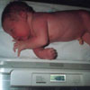

Гарантировано конституцией |
|
|---|---|
|
Ворганизме все взаимосвязано: от особенностей телосложения зависит наш вес, который, в свою очередь, влияет на менструальную функцию и способность зачать ребенка. Дело в том, что женские гормоны эстрогены, без участия которых не обходится ни одно «событие» в организме будущей мамы, вырабатываются не только особыми железами, но и жировой тканью. Менструальный «механизм» начинает налаживаться в то время, когда жировой слой девочки составляет 1/5 от общей массы тела. Вот почему у полненьких красавиц первые «месячные» случаются раньше, чем у их худощавых сверстниц. Помимо налаженной менструальной функции, важное значение для будущей мамы имеет и размер костного таза. Его, кстати, тоже определяют гормоны: женские - эстрогены и мужские - андрогены. Первые стимулируют рост таза в ширину и длину и «отвечают» за плотность его костей, а вторые - за рост скелета и таза девочки в длину. Размеры таза, во-первых, могут быть чертой, свойственной определенному типу телосложения, то есть у миниатюрной от природы женщины таз обычно бывает небольшим, у высоких и худощавых год действием мужских гормонов - приплюснутым по бокам, а у пышек обычно нормальным. Во-вторых, размеры таза могут стать следствием гормонального дисбаланса. Например, если у девушки в период полового развития по каким-то причинам было снижено количество эстрогенов, она, скорее всего, превратится в женщину небольшого роста (152-154 см), тонкокостную и с узким тазом. Другой пример: если девочка-подросток занималась профессиональным спортом, в ее организме будет вырабатываться больше андрогенов - мужских гормонов, Этот дисбаланс повлияет на образование скелета, и она, скорее всего, превратится в девушку высокого роста с широкими плечами и узким тазом. Кстати, о емкости костного таза нельзя судить по внешнему виду, она, скорее, зависит от его формы и толщины костей женщины. Предположить их толщину можно, измерив, окружность запястья. Если она получится больше 15 см, это может означать, что кости исследуемой барышни широкие, а значит, емкость малого таза окажется скромной. На тонкую кость укажет число меньше 15 см - внутреннее пространство, скорее всего, будет больше, чем можно предположить на первый взгляд.
Что касается зачатия, вес будущей мамы играет в этом процессе важную роль. Впрочем, если изящность или пышность форм - это дань типу телосложения, а не следствие гормонального дисбаланса, все сложится удачно. Правда, разобраться в этом вопросе сможет только врач.
А нет ли особенностей в течение беременности каждой из наших героинь? Конечно, есть.
 Изящные женщины, как правило, благополучно справляются со всеми этапами родов, потому что чаще всего у них рождаются небольшие дети. Если же миниатюрность мамы связана с недостатком гормонов, ее костный таз может оказаться слишком тесным для малыша, и процесс его появления на свет затянется. Высоких худощавых мам доктор иногда направляет на кесарево сечение, потому что ребенок просто не сможет пройти через тесный костный таз. Если же его параметры окажутся в норме, проблем не будет. Пышные женщины, чьи формы связаны с гормональным дисбалансом, рискуют задержаться с началом родов. Причина - нехватка гормонов, которые «отвечают» за начало и продолжение ритма схваток. По этой же причине, а еще и потому, что у таких мам обычно рождаются крупные дети, в процессе их появления на свет родовая деятельность может ослабнуть. Пышные девушки, избежавшие гормонального дисбаланса, обычно рожают благополучно и в срок. |
|
<На главную> <Назад> <Далее> |
|